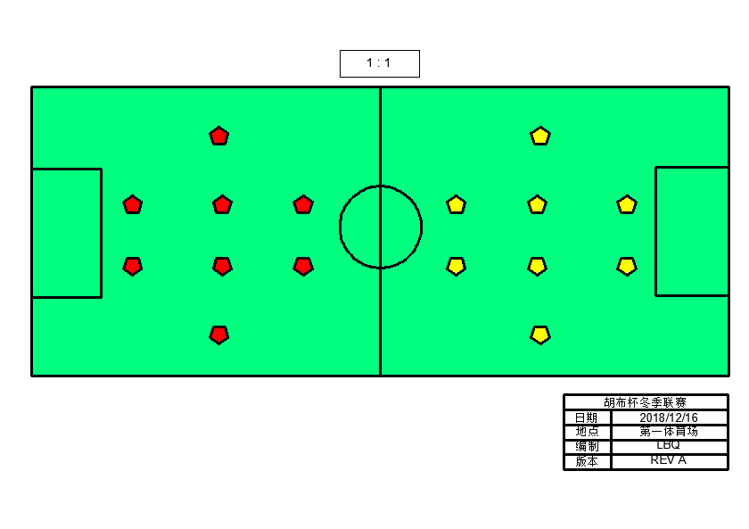

幸运的人一生都在被童年治愈，不幸的人一生都在治愈童年
随着《欢乐颂》《都挺好》等电视剧的热播，近几年来仿佛出现了一个热词“原生家庭”。
作为子女是父母生命的延续，不管多想逃离这个家庭，但终其一生无法摆脱父母的影子。
这种感觉仿佛就像一位网友说的：“当我发现我抱怨的内容、语气、神态和我的家人一模一样的时候，我感觉到一股寒意从脊背上窜上来，深深地无奈与悲哀。”
不得不承认，原生家庭对一个人的影响实在是太大了，他是潜移默化和深远持久的，或许等我们意识到的时候那些影响早已深入骨髓了，不论是好的影响还是坏的影响。
我还记得董卿在一顿采访中讲到自己的原生家庭，董卿说父亲对自己的苛刻超出想象：“不要我照镜子，不让妈妈给我买新衣服，不能有任何的文体活动。高一开始到高三，每个寒暑假必须要打工挣钱”。 这种教育方式让她到现在还经常会出现自卑情绪，“我要做的比别人好很多很多，我才觉得踏实”。 或许也就是因为这样的严格要求，才成就了今天的董卿。可就如她所言那种挥之不去的自卑也是真的。
原生家庭带给的最大的影响，是总觉得自己不配得到好。 不是物质上的好，是人。稍微一点的善意，就会让自己手足无措。 在充满爱的家庭里长大的孩子，他们身上的那种强大的自信和安全感，或许这一辈子都模仿不来的。
